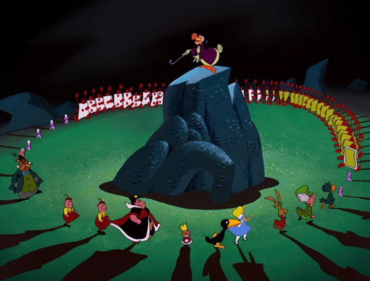

Not all of Disney's lead heroines are princesses. The 1951 movie "Alice in Wonderland," based on the popular books by Lewis Carrol, is about an ordinary young girl (albiet from a well-off family, but regardless) who ends up in an adventure through a dream-like world known as Wonderland. Despite the many non-Disney adaptations, chances are that it's the Disney classic you think of whenever someone mentions the story. Unlike Disney's other movies, there's a good chance you'd recognize all the characters even if you HAVEN'T seen the film, or if you have, that you'd completely forgotten what their scenes and dialogue were, as the movie's many colorful characters lent itself well to heavy merchandising. In this story, Alice is taking study lessons under a tree (and not really listening to her private tutor), when she sees a White Rabbit running across the hill. A Rabbit with a three-piece suit. Exclaimng "I'm late!" while looking at his pocket watch. Curious about the strange character, Alice chases after it, falls down a rabbit hole, and meets a talking doorknob. As she proceeds, the characters she meets get stranger and stranger, some kind, some dangerous, and all confusing, and eventually, Alice realizes she needs to go back home, but has no idea how to. "Wonderland" has one of the weaker stories in Disney's canon, since it doesn't really have a story at all. It's a serious of vignettes of Alice meeting yet another character or two, having a conversation or song with them, and walking off to meet someone else. Certainly, all the characters are fun, be it the White Rabbit, Twiddle-dee and dum, the Mad Hatter and March Hare, or the Cheshire Cat. And finally, the Queen of Hearts, a large woman with a mad temper, screaming "OFF WITH THEIR HEAD" to anyone that annoys her. There's no particular logic to where Alice is going or what she's doing, or how exactly she'll get home. It's even a stretch to say that she'd even grown as a person by the end of the movie... it's possible she'll follow her own advice more often and not follow any more strange rabbits, but somehow, I doubt it. The final realization, that this entire adventure was simply a dream, further reduces the stakes upon future viewing. But with such a colorful world and a cast of crazy characters, you'd think it would be fun to just watch each scene after the other, like a series of nonsense poetry and prose. On the contrary, both as a child and as an adult, I find "Wonderland" to be a little bit of a bore to watch. The enjoyment comes from not knowing where the story would go next, but when we get there, watching Alice's straight reaction to everything is a bit repetitive.  The movie can also be a bit dark at times. An early story about the Walrus and the Carpenter involves eating live baby oysters, and Disney's animators made them especially cute, all the more to be sad when they're gone. And there's the infamous Caterpillar, smoking a hooka with Arabian shoes, one of the most direct symbols of this being a drug-induced fever dream (perhaps Alice ate a bad mushroom before falling asleep). Disney Plus has cultural-impact warnings for most of its older movies, but I've surprised there's little attention about the Caterpillar and his inspiration. The general tone of the movie is that of a hallucination nightmare, which might unnerve very young children. Despite being a weaker entry, I still acknowledge that "Wonderland" is a classic movie, thanks to those crazy characters and memorable songs. Some of the songs are quite sweet (like the flowers that sing "Golden Afternoon"), and some quite fun and catchy ("The Unbirthday Song" or "Painting the Roses Red"). The animation is especailly expressive and cartoonish, but perhaps not as of high quality as some of the previous feature-length stories from Disney. But those bright colors and willingness to be cartoonish helps give the movie a memorable style, including some inspired side-characters and animals that allowed the animators to use their imaginations to the fullest. It's also worth noting that, for whatever reason, the sharpness and color of the picture looks much better on Disney Plus than prior movies, so this looks fantastic in HD. "Alice in Wonderland" is one of the stranger, and weaker, but also more memorable entires in Disney's earlier films. I wouldn't rewatch it frequently, but I'm fine with the characters reappearing in merchandise and other media.
- "Ani" More reviews can be found at : https://2danicritic.github.io/ Previous review: review_Alice_and_Zoroku Next review: review_Alien_Nine